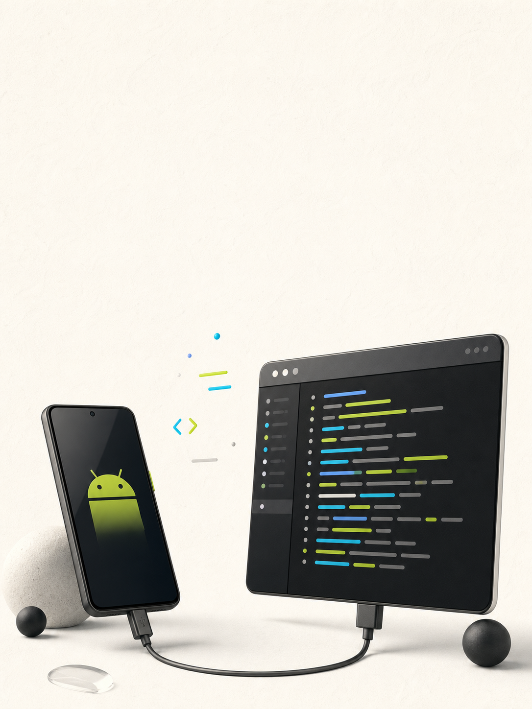

一个在浏览器里查看 Android Logcat 的本地小工具。

真正的需求很小，打开与切换的成本却不小。
本地启动一个 Node 服务，自动打开浏览器；日志仍然通过你本机的 adb 获取。
该用 IDE 的时候，还是用 IDE；这个工具只解决“快速看日志”。
复制这条命令试一下。项目已发布到 npm。
前提：Node.js 18+ 与 adb。macOS / Linux 找不到 adb 时会提示安装。